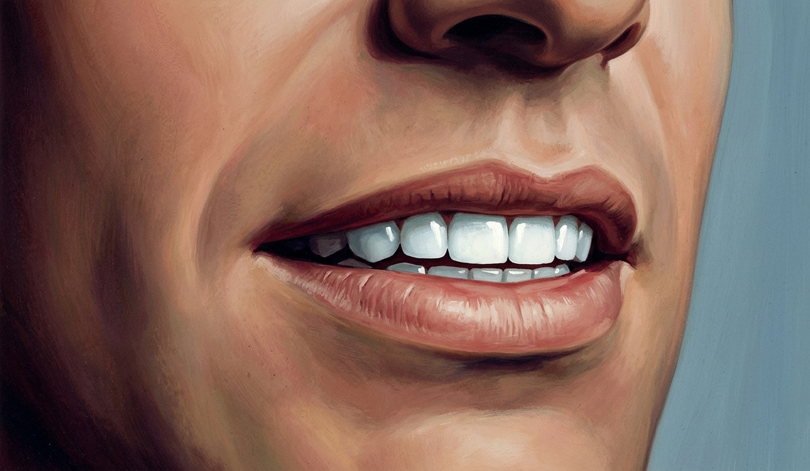
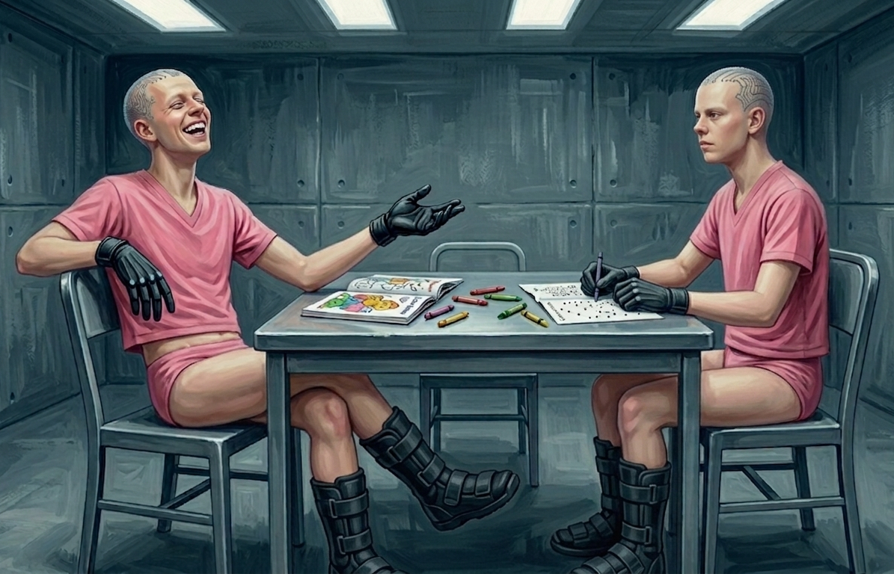
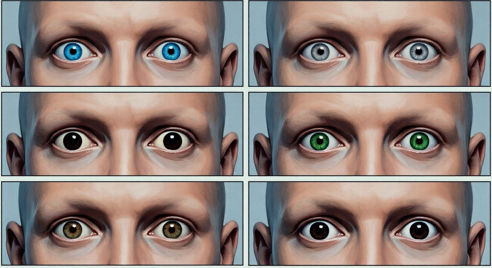

They were still taking stock of the inches they'd lost when the lights went out.
"The fuck," said a voice from somewhere in the direction of Hal.
Charlie had his hand up before he knew it, the same flinch that would have shielded his eyes from brightness. He wasn’t sure why, but something about the darkness after days of constant light felt as startling as a camera’s flash. Feeling foolish, he lowered his hands in the pitch black. Around him, the sounds of six people recalibrating: a caught breath, the creak of a cot frame, feet finding the floor and stopping there, thinking better of it.
The darkness was complete in a way that took a moment to accept, no gray at the edges, no differentiation between wall and ceiling. He'd spent days in the fluorescent white without registering what it was doing to him, his body unable to tell afternoon from midnight, the light pressing down continuously with its flat institutional certainty. He hadn't realized how much of himself had been devoted to just enduring it until the dark gave him something approximating an answer.
"Bedtime," Toad said eventually, from somewhere to his left. "I guess we're getting a bedtime."
"Worst summer camp in the universe," Hal said.
Charlie found his pillow and looked up at where the ceiling was and found himself thinking about Wren Cade, which was where his mind went these days when he let it go anywhere it wanted.
He hadn't typed her name to be cruel. That felt true and also insufficient. He'd typed it because he was uncomfortable watching her cry and the chat was open and he needed to tell someone. She looks really upset. And then the chat took the information and went somewhere that made him even more uncomfortable. He'd gone to the bathroom to get clear of it, because getting clear of things was his native motion. It had never even crossed his mind to hide his laptop screen.
The guilt washed over Charlie again. Hal had said worse things, Jay had piled on, but the thread had started with him and the only reason Wren knew about it was his carelessness, which meant the only reason Cade knew about it was his carelessness. The others knew their captivity was connected to Wren, Cade had told them that much. But they had no idea Charlie was the reason they were all here.
He'd thought about telling them. He thought about it again now in the black, and felt the exact shape of how it would land — Austin's anger, what Hal would say, Peter’s disappointment — and then let the dark take it instead.
He turned over and his hip bone pressed into the mattress, too prominent, announcing itself each time he shifted. His jaw ached, or something in his jaw did, something he couldn't quite locate. He ran his tongue absently along his lower teeth and found the faintest give, a small wrongness he couldn't name. He'd been clenching for days. Probably that. He settled his jaw and closed his eyes and found somewhere flat to put his mind and eventually, without deciding to, he went under.
The lights were back on. Morning, apparently. Charlie woke to something in his mouth.
Small, hard, sharp. Loose on his tongue, rolling slightly as he surfaced, tucked between his lower lip and the front of his teeth. He moved it. Ran his tongue along one side of it and recognized the shape and sat up.
He pressed two fingers to his lips and opened them and what he feared fell into his hands.
A molar sat in his palm. Root intact, crown intact, the tooth that had lived in the lower left side of his jaw for as long as he'd had adult teeth, sitting in his hand like a coin pulled from behind someone's ear.
He ran his tongue across the gap. Then carefully — already knowing what he'd find, already not wanting to know it — along his front teeth. Each shifted slightly under the pressure. A tiny, horrible movement, like a door on a hinge that shouldn't exist. The way a baby tooth shifted in the last days before it went, that particular wrong give, the socket holding on out of habit rather than grip.
From across the room came the sounds of everyone else arriving at the same place.
Toad had his hand against his jaw, looking around the room with mild confusion. Peter was already upright with his glasses on, running one finger along his upper teeth like someone inventorying a shelf. Hal had his hand in his mouth, working at a tooth — the thumbnail, then the finger, then the full thumb pressing against the back of it — needing to find the limits of the damage, to understand exactly how bad it was. Testing it the way you tested a crack in something to find out how far it went.
He found out.
The tooth came out with almost no resistance. Not pulled, just suddenly no longer attached, one moment in his mouth and the next flying through the air, as if it had been launched from Hal’s gums. Hal watched it arc across the room and land before skittering across the floor, stopping directly in front of Jay.
Jay had gone still. Charlie watched the color leave his face in a single clean drain, not the gradual pallor they'd all been wearing since the fever.
"Oh god." Jay was on his feet. "Oh god, Hal—"
"I barely touched it."
"Oh god oh god—" Jay's hands went to his own face. "We're losing our teeth. We are actually losing our teeth right now—".
He was out of his cot and at the door before anyone moved, his fist against the metal, not a single impact but a sustained rhythm that had no strategy behind it, just volume, just the need to produce something louder than what was building in his chest. The nodes across his scalp fired in pulses with each impact, blue-white, ragged, the circuits reading the movement and finding nothing to do with it. His voice had come fully apart and what came out was high and stripped and not quite words.
"Open it open the door open—"
"Jay." Austin was on his feet, the cot creaking as he pushed off. He got a hand on Jay's shoulder. "Hey. Hey—"
Jay shrugged him off and kept going. Austin looked at Charlie. Charlie looked at the door.
They waited. Jay's fist slowed as the energy of it ran down to something more like endurance than urgency, the rhythm going ragged. His forehead dropped against the metal. His shoulders kept moving.
The lock disengaged and Jay stepped back.
Vane entered, his face carrying a look of mild irritation, as if the idea of his prisoners summoning him was a reversal of the natural order of things. He took in the room without hurry, and waited. Jay's arm fell to his side, his eyes not landing anywhere in particular, the nodes in his scalp dimming as his body stilled.
"Our teeth are falling out," Jay said.
"I can see that."
"You can see that—"
"Yes." Vane moved through the room and examined each of them in turn, a thumb pressing briefly to a tooth here, a note made there. When he got to Charlie, he pressed each tooth in the lower row in sequence and Charlie felt them give, one by one.
"I was afraid of this. Mineralization loss." Vane stepped back. "Another adverse reaction to the treatment. They're going to continue to loosen. All of them."
Peter had already opened his mouth to ask the obvious question.
"The damage is too extensive to repair.” Vane said, before he got there. “The teeth will need to come out. And be replaced."
“Replaced with what," Peter said.
He turned the tablet and showed them a rendering. A cross-section, a root structure in something metallic and branched, extending deep into the jaw. A crown in something white and perfect.
"Titanium-ceramic composite. Permanent, structurally superior to what you have now." He glanced at the tablet as if admiring a photo of a beloved child. "The bonding mechanism — the implant root fusing directly to the jawbone — is a process years in development. Nothing comparable exists in any approved clinical setting." He looked up. "You will be the first human subjects to receive them."
"We didn't ask to be first at anything," Jay said.
“No. But this will be an excellent opportunity to collect data. The procedure is brief and you'll be sedated throughout."
"And on the bright side," Toad said, "no one will be able to identify us by our dental records."
Vane ignored him. "They won't decay. They won't chip or wear them down. They will outlast you." Something in his face opened slightly. "Whatever else you leave here with, you won't have a cavity for the rest of your lives."
The procedure took place in a room that was white and antiseptic and smelled of something faintly sweet underneath. Charlie was in the chair before he'd fully taken it all in, the orderlies restraining him to the reclined seat, an unfamiliar masked man arranging instruments on a tray without looking at him. Vane stood at the far end with his tablet, making notes.
A mask came down over his nose and mouth. The sweet smell strengthened and everything around him stayed exactly as it was but the distance between Charlie and it increased, everything present and accounted for and at one remove: the light above him, the masked man's hands, the tray of instruments. The urgency left first. Then the shape of time.
The first extraction was nothing. That was the horror of it. He could feel the instrument, the pressure, the slight movement, and then release and absence, and the tooth was simply no longer there. No resistance, no struggle. Like a nail coming out of wood that had already softened around it. I would have held on, Charlie thought, half-present. They didn't hold on. They'd already let go.
Three more went the same way. The pressure, the movement, the release. Each time his tongue found the new gap before the next one started. His mouth becoming a vacant room, furniture moved out.
"Open a little wider."
The bonding agent went into the first socket with a syringe and Charlie felt it as heat spreading outward from a single point, slow and chemical, reaching into places the novocaine hadn't quite touched. Sharp smell, clean. Then the implant itself. He heard it before he felt it, a faint ceramic click as it met the socket's edges, and then the man pressed it home with a deliberate, unhurried force that traveled straight up through his jaw and into his skull. Pressure, seating, the feeling of something placed into position the way a key seats into a lock. The process repeated. Click, press, the force traveling upward. Again.
He thought of Vane's word: permanent.
Then the masked man raised a wand to his jaw. Small, handheld, blue light at the tip, and he moved it slowly along the gumline, and that was when it began. It came in through the root and into the bone, a current that had no analogue he could reach for. Not electrical exactly, though it had electricity's quality of immediacy. Deep and total, moving outward through the bone itself, into his jaw and further, into his skull, and Charlie had time to understand that this was in him now, fused to his skeleton, that he would close his jaw on these teeth tonight and every night that followed for as long as he lived, and then the white moved in from the edges and he stopped understanding anything at all.
He came back to a ceiling. For a moment he didn't know where he was, then he heard Austin's voice somewhere to his left and knew.
Cautiously, he brought his jaw together.
The teeth met with a solidity that felt artificial. More contact with bone than he was used to, something added to the architecture of his face. He ran his tongue over the upper row. Perfect. No variation, a continuous even curve, and where his second molar should have had a small chip from a bottle cap at sixteen, nothing. Just smooth, complete, flawless surface. He pressed his tongue to the spot. Pressed harder. The chip had been there since he was sixteen years old and had explained it to maybe twenty people over the years. It was not there now.
Across the room, Peter had two fingers at the corner of Hal's mouth, holding it open, studying. Hal's teeth were white. Really white. Not the off-white of natural enamel but a warm, luminous white, perfect and even, the edges slightly rounded. Peter turned Hal's jaw toward the light and the smile that resulted was too wide and too uniform and the way every surface caught the light at once belonged on a different person's face. Charlie thought of the actresses in the romcoms his sister used to watch, the ones whose smiles arrived slightly before the rest of their expression did. That was the smile Hal had now. All of them had it, probably. Hal closed his mouth and his teeth were slightly visible even at rest.
{kind=link}

Charlie touched two fingers to his own upper lip and felt the edge of his teeth through it. He pressed the way you pressed a bruise — to confirm it, to understand it — and felt the solidity there, permanent, fused, occupying exactly as much space as Vane had decided they should.
They'd barely had time to recover before the orderlies arrived carrying a small metal table and six chairs, which they set up in a corner of the room without explanation. Then a second trip: bowls and spoons on a tray, and a cardboard box under one arm. Charlie watched them move through the room and thought about what it meant that Vane had decided they were ready for furniture.
"Nutritional gel," the orderly said, setting a bowl at each place. "Complete protein, electrolytes, everything you need. Until the implants settle."
The second orderly set the cardboard box on the table and pushed it to one end to make room. "Doc Vane thought you might want something to do. Said you need to practice holding things anyway." A pause. "Good for the hands."
Charlie looked at the box. The spiral edge of a coloring book. A connect-the-dots. A box of crayons, the fat waxy kind that came in an eight-pack.
"You've got to be fucking kidding me," Jay said.
The table changed something about the flow of their living space. The boys drifted to it without discussing it, pulled out chairs, sat down. It was the first time since they'd arrived in the room that anything in it suggested people were supposed to be comfortable here.
Charlie sat down and looked at the bowl in front of him and thought: that's not food.
It was white. Translucent at the edges, opaque at the center where it sat viscous and slow, not quite settled.
He pressed his spoon in. The gel displaced slowly, thickly, clung to the spoon when he lifted it in a way pudding didn't.
"Looks like goo," Toad observed.
"It is goo," Jay said.
Charlie grimaced and put the spoon in his mouth.
The taste was sweet first — engineered, sourceless, clinical — and then something underneath it arrived that he had no category for, salt-warm and faintly organic, and he swallowed.
"It's not that bad," he said, in a tone that convinced no one.
He was, it turned out, extremely hungry. He took another spoonful because there was nothing else and the aftertaste didn't get better or worse, it just stayed.
Jay watched him. Then he picked up his own spoon. Across the table the others had reached the same conclusion.
"The Goo," Hal sighed, dipping his spoon into his bowl.
Charlie scraped the last of his from the bowl. Still wrong, but his stomach was warm for the first time in days, the warmth spreading upward through his chest into his shoulders, and the fullness arriving with it was complete in a way that had nothing to do with the volume he'd eaten.
Peter pulled the box toward him and rifled through it with the focused attention of an inventor who’d been given inadequate tools but was deciding what to do with them anyway. He came up with a green crayon and a page torn from the back of the connect-the-dots, blank on one side. He smoothed it flat on the table and started writing, small and compressed, filling the margin first and then moving inward.
“What are you doing, Peter?”
“Notes. I need to make sure we don’t forget what’s happened to us.”
Toad slid the coloring book out from under Peter's elbow and idly flipped through it, not bothering to pick up a crayon. Charlie felt warmth settle over him, heavy and quiet, the scratch of Peter's crayon moving across the page, and nobody talked.
The Goo, as they’d all taken to calling it, came three times and the lights went out once and came back on once and that was a day.
Charlie understood this with the part of his mind that was still doing inventory — still counting, still oriented — and the rest of him moved through the days like something floating just below a surface. He ate. He slept. He woke to the lights and sat at the table with a crayon and colored until the next bowl of Goo arrived and then he ate that too, and the salt-warm aftertaste stopped registering as wrong and started registering as what food tasted like.
He knew it had to be laced with something. He ate it anyway, because there was nothing else, and because by the third day the knowing and the eating had stopped feeling like they were in conflict. They all slept far more than they needed to, and their waking hours were hazy and disconnected and Charlie felt like he was watching himself from yards away.
Peter had filled six pages with notes before the Goo caught up with him. Charlie had watched it happen from across the table: the handwriting spreading and losing its columns, the entries shortening from observations to single words. One morning Peter sat down, looked at what he'd written the day before, and pushed it aside. He pulled the coloring book toward him instead and that was the last of it.
Every other day or so the orderlies came in to exchange the fluid in their briefs. Charlie held still for it — the tube attached to the port at his hip, a brief warmth, done in under a minute — and picked his crayon back up afterward. He had stopped thinking about what the fluid was for. He'd stopped thinking about the fact that he hadn't used a bathroom since he’d arrived, that his functions were being handled somewhere he couldn't feel. The Goo made it easy not to think about things.
The music started on what was probably the fourth day. It came from a speaker somewhere above them, the volume set low enough to deny you were really hearing it until you'd been hearing it for an hour, and what it played was relentlessly bright pop on loop: high female voices, melodies that resolved cheerfully and immediately, the exact texture of the soundtrack in stores at the mall that sold fast fashion. The first time it came on Austin said something short and sharp and covered his ears and Jay had laughed. But the Goo made sustained anger difficult. The music played and they sat and colored, and after a while the music was just there the way the table was just there, and then it was there the way breathing was there.
By the second week — if it was the second week, the counting had gotten unreliable — Charlie caught himself singing along to something while he stayed inside the lines on a page of flowers. He stopped when he noticed. The next day he didn't notice.
The walk was the first physical thing that stopped being something he tracked. If he made the effort to think about it, he knew it was different and getting more pronounced — the constrained stride, the hips swinging out to absorb what the shortened step couldn't cover — but the gap between knowing it was wrong and feeling it as wrong had been widening since the first day, and somewhere in the Goo-softened middle of the week it broke entirely.
He discovered at some point that he could still override the hip-cock when standing, could redistribute his weight, hold his body in a position it recognized from before. But it required a specific sustained attention that felt disproportionate to what it achieved. Standing the old way took effort now. The other way just happened. He corrected himself back a few times and then stopped bothering with it.
The others had all developed new ways of moving that were wrong in ways he couldn't articulate, and all of them were wrong differently. Austin moved through the room with his forearms held close to his sides, level, just held in, as if he'd decided to take up as little space as the situation permitted. It was the first time Charlie had ever seen Austin take up less space than he could have.
Hal crossed the room with his shoulders back and his chin level, the upper body composed and still while his legs glided under it. Upright, traveling in a straight line, like the movement had been ironed flat.
Their bodies began to regain their lost weight over the following days, which was good, and not quite right, which was something he'd stopped expecting to be good.
He was sitting at the table one afternoon, the cropped hem of the t-shirt riding up slightly, when he looked down at his thighs where they rested against the chair seat. That was where he noticed the softness first, in his legs. He’d hoped to see bulk returning, the muscle reassembling itself on its frame in the places it once resided. What he saw was something else. His skin filled out and smooth, any definition gone. Supple. A layer of fat settled over him continuously and evenly.
He looked at himself for a moment and then reached down and pinched the strip of skin above his waistband. It came up between his fingers with more give than it should have. Not a handful. Just more than yesterday, more than last week, a softness that had been arriving in increments too small to track and had accumulated into something he could hold between two fingers and look at.
Across the table Peter had his arm stretched out toward the crayon box, reaching, the sleeve of his t-shirt riding up. His forearm in the light was smooth from wrist to elbow — the veins that used to track along it gone under, the whole surface even and rounded where it used to show the shape of what was working underneath.
Jay had his chair pushed back from the table, talking to Toad about something. His body angled away, legs crossed at the knee, one arm lying along the table with his hand open. Loose, settled, like he had all the time there was. Toad sat across him with his back straight, not touching the chair behind him, both feet flat on the floor, finishing a connect the dots with short precise strokes.
{kind=link}

Charlie turned back to his coloring because thinking about it all was too much work.
He was somewhere in the middle of a chorus of some unidentifiable pop song when the music cut out. He kept going for another half a line before he heard himself singing alone and stopped. Jay was looking at him. Hal was looking at him. He shrugged and looked down at his coloring book just as the door’s lock disengaged.
They heard the wheels of the cart before they saw Vane enter, pushing it. The machine on it was the size of a small television, mounted on an adjustable arm, with a chin rest at the front and a column of controls along the side that Vane had already started working before he'd finished positioning it.
"Eye examination," Vane said. He looked at Peter. "Sit on your cot, please Peter."
Vane wheeled the cart over and adjusted the arm, positioning the machine at the right height, then pressed something on the side panel. Two curved arms extended from either side of the machine and when Peter leaned into the chin rest they came forward and closed around his skull, one at each temple, meeting at the back of his head with a soft mechanical click. Peter reached up and touched one.
"Hands in your lap," Vane said. He loaded something into a port on the side of the machine — a curved sliver of something gray and translucent, seated in a slim arm — and made a final adjustment. The applicator extended. Charlie watched Peter's eyes in profile, the machine coming flush against them, and then Vane pressed a key.
Peter's whole body went rigid against the clamp, the convulsive pull of someone trying to get away from a threat. A sound came from him that wasn't quite a word. Then the arms released and Peter reclined onto the mattress and lay there with his eyes open and aimed blankly at the ceiling.
“I can’t see anything.”
"Temporary," Vane said. He was already reloading the machine. He looked around the room and found Jay. "Next."
"No." Jay was on his feet. "What kind of eye exam does that? What did you just do to him?"
Vane sighed and reached into his breast pocket.
Jay's feet locked to the floor. He looked down at them, then at Vane, his breath becoming audible, the same terror rising that had erupted when they’d lost their teeth and was slowly finding him again through the Goo-haze.
"This is not optional. The blindness is a side effect of the vision correction," Vane said.
"My vision doesn’t need correcting."
"Control group. Some subjects will receive correction. Others receive only the film." Vane wheeled the cart in front of him.
"That's not how control grou—" Peter started, from his cot.
"Stay away from my—" Jay shouted over him.
The arms extended and Jay's head was in the chin rest before he'd finished, the clamp closing around his skull. His hands came up and found the arms and pushed against them but found no purchase, and then Vane loaded a dark brown film and pressed the key and Jay made the same sound Peter had made and went still. Vane released the clamp and left him there — frozen from the boots down, blind from the eyes out — and moved to Austin's cot.
Austin sat down on his cot without being asked.
Vane worked through the rest of them. Charlie tracked it from his cot — the cart moving, the click of the clamp, the sound each one made — and felt the dread growing within him until the cart was in front of him and Vane was adjusting the arm and there was nothing to do but lean into the chin rest.
The machine was cold. He set his chin down and the arms extended and came around his skull and clicked into place, the padding firm against his temples, and he looked into the eyepiece and saw the inside of the machine: the lens, the small arm, the curved film — blue-tinted in Charlie’s case — loaded and waiting.
The arm moved toward his eye.
He watched it come and could not move and watched it come and could not move and in between blinks it landed, a touch on the surface of his eye with no sensation at all, which was the worst part of it. He'd braced for pain and gotten absence, a contact so precise it didn't register on the surface. The arm was gone before his next blink arrived. A brief chemical warmth as the film adhered, a sealing he could feel from inside the eye itself, spreading outward from a single point, and then Vane pressed the key.
White. Not light. Not brightness. White arriving all at once, no source, no edges. He'd lost his bearings before the clamp finished releasing: no floor, no ceiling, no distance between his hands and anything else. He lay back and found the mattress.
He heard Vane finishing with Toad. Heard the cart moving out into the hall, Vane’s footsteps receding behind it. He heard Jay’s boots unfreeze and the small stumble of him finding the floor and sitting down.
Charlie realized too late that he hadn’t heard the door close behind Vane. The open door was somewhere across the room and freedom was somewhere beyond it and he couldn’t find either of them right now because he couldn’t see his hands in front of his face.
Vane returned a few minutes later, as their eyes were just starting to improve. Charlie’s vision returned slowly, the white pulling back from the edges, and what came back with it hit him like stepping outside after a long time indoors. He looked at the coloring book on the table first, the red of its cover so saturated it almost had weight, the title text sharp enough to read from across the room. His own hands, the lines of his knuckles, the weave of the fabric of the gloves, every thread. He'd had no idea there had been a softness to his vision until it was gone — some slight imprecision he'd lived inside so long it had become just how the world looked — and now the room was turned up past anything he'd experienced, every surface sharp and every color more than he'd known colors could be. The Goo-haze that had been sitting over everything for days receded a few inches. He felt briefly, uncomfortably awake.
Vane went to Peter first, tilting his chin up and moving a penlight slowly across each eye, checking for something.
Charlie looked at Peter's eyes and for a moment didn't understand what he was seeing. They were hazel — a warm amber-brown with flecks of green and gold — where a few minutes ago they’d been a flat grey behind the thick lenses. He looked different. Not dramatically, not unrecognizably, but his eyes were wrong for his face in a way Charlie couldn't stop noticing.
Peter was turning his glasses over in his hands like they were suddenly an alien object. "How is your vision without them?" Vane asked.
Peter glanced at the glasses and then back at Vane. "Perfect. Everything is crystal clear and sharp. How long is this going to last?"
"We will have to monitor you, but we intend for the biofilm to be permanent.”
“Incredible.”
While they were speaking, Charlie had looked over at Hal and discovered that his eyes were now green. A deep, rich green. Luminous, the color of a retouched photograph, too saturated to look entirely real, too vivid for a face.
Vane moved to examine Hal, and Charlie's eyes went to Austin and Jay, who were looking at each other across their cots with matching expressions somewhere between confused and unsettled. Their eyes were the same deep brown, a warm dark color that would have looked natural on a different face. On both of them, pale and fair, it sat wrong, the color belonging somewhere else entirely.
Vane reached Charlie and tilted his chin up, moved the penlight.
"You said this was vision correction. Why did it change our eye color?" Charlie said.
"There's significant demand for both vision correction and cosmetic optometry." Vane clicked the light off. "You're helping us develop both simultaneously."
He moved on to Jay. Charlie looked at Toad, who looked back at him out of unsettling cool grey irises, and then at Peter, who was also staring back at him, glasses forgotten on the cot beside him.
"What’s wrong?" Charlie said.
"Your eyes are blue," Peter said.
Charlie had brown eyes. Standard, unremarkable brown, the kind nobody ever commented on.
"I mean… really blue," Peter said.
{kind=link}

Vane finished with Jay and moved to Toad's cot. He tilted his chin up and held the penlight close.
"Any issues, Porter?" he said.
Toad looked at him. "Toad."
"Porter," Vane said again, identical in pitch and pace, as if Toad had not spoken.
"My name is Toad."
"Your name is Porter."
Toad sat up. He looked at Vane directly, not aggressive, just more present for the first time since they’d woken up in captivity together. "I've been called Toad since I was ten years old. Nobody calls me anything else. Whatever your records say, that's my name."
Vane held his gaze for a moment. Then he looked at his tablet, swiped across the screen twice and made a small adjustment with his thumb. "I prefer Porter," he said mildly.
As he moved toward the door, the nodes across Toad's scalp fired red. Not the blue-white of movement or correction. Red, a hard saturated red that pulsed once along every trace from the base of his skull to his temples and went dark.
"That was weird," Jay said, after the door had closed behind Vane.
"Screw him," Toad muttered, his head finding his pillow, arm over his eyes.
The afternoon passed. The Goo came and went. The music returned, songs they'd all heard enough times to know the words to, and for a while the only sounds were the music and crayons on paper.
"Hey," Austin said, not looking up from his connect-the-dots. "Pass the red, Toad."
Four nodes lit red on Toad's scalp. Small, targeted, two at the temples, two at the base of the skull. A cluster. Two seconds and gone. Toad's hand jerked against the table, the crayon skidding across the page, and he put both palms flat and sat there with his jaw tight, the red light already fading from his scalp.
"What’s wrong?" Austin said.
“My name.”
“Toad?”
Red. The same four nodes. Toad swallowed hard.
"It's like—" He stopped. He was looking at the middle distance, working through it. "When you said it, I just saw an actual toad. Like, sitting there. Wet. Cold.” The nodes fired again, brief, and his lips pressed together. "It's disgusting. I don't know why it's disgusting, it just is, it's instant, and it has my name on it.”
The table was quiet.
"Toad," Hal said, almost conversationally, but his eyes were locked on the nodes at Toad’s temples. Testing.
"Hal." Charlie's voice came out sharper than he'd intended.
But the nodes had already fired, the red tracking up his skull and fading, and Toad had his hands pressed flat on the table and was looking at them, his eyes going bright and full in a way that nobody at the table pretended not to see.
"Stop," he said. His voice had gone thin. "Please stop."
Nobody said anything. Charlie looked at his coloring book, at the half-finished page in front of him, and then looked at Toad, who was still looking at his own hands, and said: "It's okay. Hey." He waited until Toad looked up. "Porter."
The same nodes on his went green. Toad exhaled. Charlie watched the tension leave his shoulders in a single slow release, the jaw unclenching, his hands lifting from the table. He got up without looking at anyone and went to his cot and lay down with his arm over his now-grey eyes and wept, quietly.
“Oh my god,” Jay said. “He’s in our heads! He’s controlling our thoughts!”
Peter reflexively put his glasses on before he blinked twice and removed them before speaking. "I don’t think it’s so simple. The mind is too complex for anyone to be writing thoughts directly into it. That's not how it works, and I think we'd know if he was trying.”
“But—”
“But a conditioned response to a specific word is a much simpler mechanism.” Peter’s new hazel eyes darted around the room. “They’ve apparently discovered how to attach something to a word or concept and it will be there every time that word is spoken, until the path of least resistance stops running through it."
"You have to fight it, Toa—” Austin stopped himself before the name landed.
“That’s the thing.” Toad was quiet for a moment. "I — don’t want to.”
Charlie looked at Toad—Porter—still on his cot, eyes wet, looking at the ceiling. At the nodes across his scalp, dark now, waiting for the next signal. He thought about the boots, which had changed how they walked. The gloves, which had changed how his hands moved. Their eyes, now various vivid shades which were not theirs. All of those were things done to the surface, to the outside, to the parts you could put a hand on and measure.
This was inside his head.
This was the part that was supposed to still be theirs.
Charlie became aware of his own nodes, sitting quiet against his scalp. They'd been there long enough that he'd stopped feeling them as separate. They registered the way teeth registered, the way the roof of your mouth registered, the way any part of your body you didn't think about registered. Present, integrated, running. He reached up and touched one, the small hard disc flush to his skull, warm with whatever current ran through it at idle. It didn't react to his touch. It just sat there, doing whatever it was built to do, patient and indifferent, keeping its own time.
He had no way of knowing what was already in there, waiting for Vane to install it in his mind.